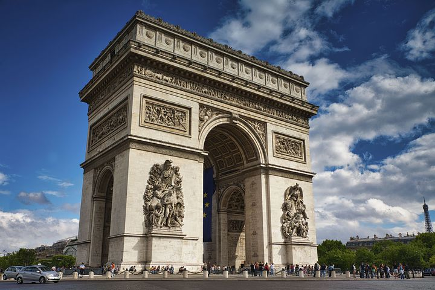
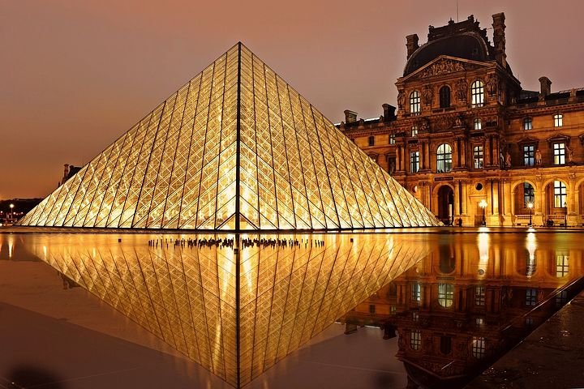

historique et quelques lieux mythique

La tour Eiffel Écouter est une tour de fer puddlé de 324 mètres de hauteur (avec antennes)o 1 située à Paris, à l’extrémité nord-ouest du parc du Champ-de-Mars en bordure de la Seine dans le 7e arrondissement. Son adresse officielle est 5, avenue Anatole-France.
Construite en deux ans par Gustave Eiffel et ses collaborateurs pour l'Exposition universelle de Paris de 1889, célébrant le centenaire de la Révolution française, et initialement nommée « tour de 300 mètres », elle est devenue le symbole de la capitale française et un site touristique de premier plan : il s’agit du troisième site culturel français payant le plus visité en 2015, avec 5,9 millions de visiteurs en 20162. Depuis son ouverture au public, elle a accueilli plus de 300 millions de visiteurs3.
D’une hauteur de 312 mètreso 1 à l’origine, la tour Eiffel est restée le monument le plus élevé du monde pendant quarante ans. Le second niveau du troisième étage, appelé parfois quatrième étage, situé à 279,11 mètres, est la plus haute plateforme d'observation accessible au public de l'Union européenne et la deuxième plus haute d'Europe, derrière la tour Ostankino à Moscou culminant à 337 mètres. La hauteur de la tour a été plusieurs fois augmentée par l’installation de nombreuses antennes. Utilisée dans le passé pour de nombreuses expériences scientifiques, elle sert aujourd’hui d’émetteur de programmes radiophoniques et télévisés.

L'arc de triomphe de l’Étoile, souvent appelé simplement l'Arc de Triomphe1, est un monument situé à Paris, en un point haut à la jonction des territoires des 8e, 16e et 17e arrondissements, notamment au sommet de l'avenue des Champs-Élysées et de l'avenue de la Grande-Armée, lesquelles constituent un grand axe est-ouest parisien partant de la pyramide du Louvre, passant par l'obélisque de La Concorde, l'Arc de Triomphe lui-même et se terminant au loin par l'Arche de la Défense.
Sa construction, décidée par l'empereur Napoléon Ier, débute en 1806 et s'achève en 1836 sous le règne de Louis-Philippe.

Le musée du Louvre est un musée situé dans le 1er arrondissement de Paris, en France.
Une préfiguration en est imaginée en 1775-1776 par le comte d'Angiviller, directeur général des Bâtiments du roi, comme lieu de présentation des chefs-d'œuvre de la collection de la Couronne. Ce musée n'a été inauguré qu'en 1793 sous l'appellation de Muséum central des arts de la République dans le palais du Louvre, ancienne résidence royale située au centre de Paris, et il est aujourd'hui le plus grand musée d'art et d'antiquités au monde. Sa surface d'exposition est de 72 735 m28.
À la fin 2019, le Louvre conserve plus de 500 000 œuvres, dont plus de 36 000 étaient exposées. Elles présentent l'art occidental du Moyen Âge à 1848, celui des civilisations antiques qui l'ont précédé et influencé (orientales, égyptienne, grecque, étrusque et romaine), les arts des premiers chrétiens et de l'islam.